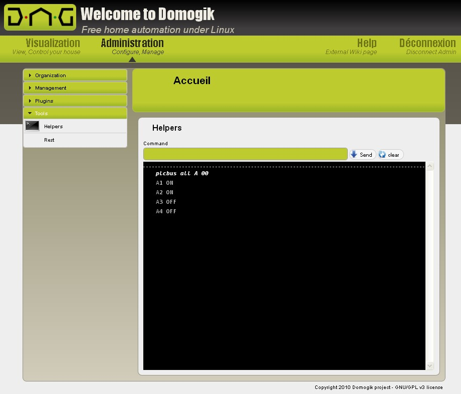

PLCBUS plugin¶
Purpose¶
Plcbus is an automation technology wich allows to switch and dim lights, control appliances, etc. This plugin allows to control plcbus devices.
Following interfaces are supported :
- PLCBUS-1141U
Prerequisite¶
Ubuntu/Debian installation¶
To use the plcbus plugin, you need the python serial package. To install it, launch this command:
sudo apt-get install python-serial
How to plug¶
Simply plug the interface into some USB port, and on the power line.

Permissions management¶
To give access to everybody on your computer to the Plcbus interface and have a /dev/plcbus entry point, follow these instructions.
First, get vendor and product ids:
$ lsusb
...
Bus 005 Device 002: ID 067b:2303 Prolific Technology, Inc. PL2303 Serial Port
...
Here, vendor id is 067b and product id is 2303.
Create an udev rule for Plcbus in file /etc/udev/rules.d/plcbus.rules:
SUBSYSTEMS=="usb", ATTRS{idVendor}=="067b", ATTRS{idProduct}=="2303", SYMLINK+="plcbus", MODE="0666"
You then just have to unplug and plug back your PLCBUS interface to have permissions on it as a non root user. Your interface will always have a symlink /dev/plcbus, no matter what the real device is.
Plugin configuration¶
Enabling the plugin¶
You can enable the plugin by using:
dmgenplug plcbus
You just have to reload the administration page in Domogik to see the plugin in the list.
Configuration¶
In Domogik administration, go to the plcbus configuration page.

device¶
Path to Plcbus interface Default : /dev/plcbus
usercode¶
The user code you want to use in your house. You can safely keep the default value or choose your own one. It is only really usefull if you have more than 255 plcbus items or if your neighbours also have plcbus devices.
Todo
example of usercode or allowed values
probe-interval¶
To detect changes made by other controllers than Domogik (remotes, switches, etc), Domogik uses fastpolling. It also helps to discover new devices. You can start setting this value to 5 seconds and then adapt it to your needs. The plugin will do a fastpoll every probe-interval seconds. In fact, it uses 2 commands :
- First do a “GET_ALL_ID_PULSE”, to detect all devices.
- Then do a “GET_ALL_ON_ID_PULSE”, to detect the state of all devices.
It is much faster than the STATUS_REQUEST order, because you ask all the devices in one house using only 1 message.
Todo
example values||
probe-list¶
The plugin will scan devices in all housecodes indicated by this field. If you know you only have devices with housecodes “A” and “B”, then only keep “AB” in this field, so that the plugin won’t scan other roomcodes.
Save your configuration¶
Just hit the button and wait the “configuration saved succesfully” message.
Start the plugin¶
You can now start the plugin (start button).
Creating Plcbus devices¶
Todo
complete following
Affect an address to a PLCBus module¶
Todo
create a device with a given address, affect feature, use feature for ON, check...
Creating a lamp device¶
In the administration panel, go to Organization > Devices page. Create a new device like this :
- Name : Short name, like “Hall”
- Address : A3 (for example)
- Description : Device details, like “Hall light”
- Reference : Plcbus module’s model, only for informations, like “PLCBUS-2221”
- Usage : “Light”
- Type : * plcbus.switch provides only on/off * plcbus.dimmer provides on/off and dim/bright.
Examples :

Attribute the features to a place you will be able to control your lamp.
Creating an appliance device¶
In the administration panel, go to Organization > Devices page. Create a new device like this :
- Name : Short name, like “Swimming pump”
- Description : Swimming pool motor pump
- Address : A3
- Reference : PLC2268HX2
- Type : PLCBus.Switch
- Usage : “Appliance” (for example)
Attribute the features to a place you can now control your appliance.
Helpers¶
To get an introduction to helpers, you can read the Helper documentation. To use a helper, the plugin must be stopped.
Discover your devices - plcbus all <home code> <user code>¶
To check if your device are correctly plugged or if your interface is able to see them, you may use the plcbus all helper. The interface parameter is not mandatory (by default it uses “/dev/plcbus”), you just have to use this command. After about 10 seconds, a result like this should be displayed :
$ plcbus all A 00
A1 on
A2 on
A3 off
A4 off
As you can see in this example you can also see the device status. Developper Notes ================
xPL schema¶
No official xPL Schema exists for Plcbus. A dedicated schema has been made for this feature. Discussion on official xPL Forum about this xPL schema
xpl-cmnd¶
PLCBUS.BASIC
{
USERCODE=<plcbus network usercode>
DEVICE=<sensor name>
COMMAND=<value sent to the device>
[ACK=<0|1>]
[DATA1=<additional data>]
[DATA2=<additional data>]
}
This sends a command to the plcbus plugin. The usercode used is always the same in one house (it only changes if we manage a plcbus system in many houses near from each others). ACK may be ignored if not usable with the defined COMMAND.
Todo
- explain more Usercode and Device (with examples)
- check if ACK is used or not
- list of available COMMAND values
- DATA1 and DATA2 : description of usage
xpl-stat¶
PLCBUS.BASIC
{
USERCODE=<plcbus network usercode>
DEVICE=<device name>
COMMAND=<value sent to the device>
[DATA1=<additional data>]
[DATA2=<additional data>]
}
It is used to send a message when a command is received from the plcbus network (for ex, is sent by a remote).
Todo
a remote sending should be a trig! Check it in code
xpl-trig¶
PLCBUS.BASIC
{
USERCODE=<plcbus network usercode>
DEVICE=<device name>
COMMAND=<value sent to the device>
ACK=1
[DATA1=<additional data>]
[DATA2=<additional data>]
}
This is used to send an acknowledge when an ack command is received.
Todo
and maybe also when an event is received
Command¶
Manual command example, assuming your usercode is “FF”
First go to ~/domogik/src/domogik/xpl/bin/
Turn ON A1:
./send.py xpl-cmnd plcbus.basic "device=A1,command=ON,usercode=FF"
Turn OFF A1:
./send.py xpl-cmnd plcbus.basic "device=A1,command=OFF,usercode=FF"
Preselect Dimmer to 40% on A1:
./send.py xpl-cmnd plcbus.basic "device=A1,command=PRESET_DIM,usercode=FF,data1=40"
Preselect Dimmer to 40% with 3 secondes Fade Rate on A1:
./send.py xpl-cmnd plcbus.basic "device=A1,command=PRESET_DIM,usercode=FF,data1=40,data2=3"
Preselect No Fade Rate on A1:
./send.py xpl-cmnd plcbus.basic "device=A1,command=PRESET_DIM,usercode=FF,data2=0"
Turn ALL Ligths OFF:
./send.py xpl-cmnd plcbus.basic "command=ALL_LIGHTS_OFF"
Turn ALL Ligths ON:
./send.py xpl-cmnd plcbus.basic "command=ALL_LIGHTS_ON"
/command/plcbus/<address>/dim/<value>
/command/plcbus/<address>/bright/<value>
Todo
complete/comment/interval for values